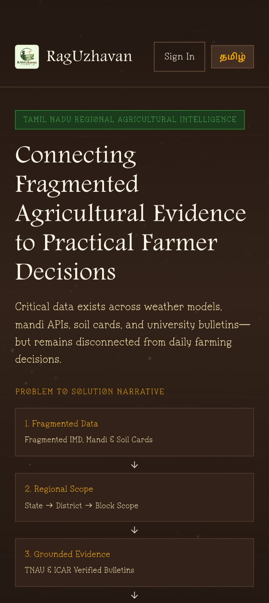
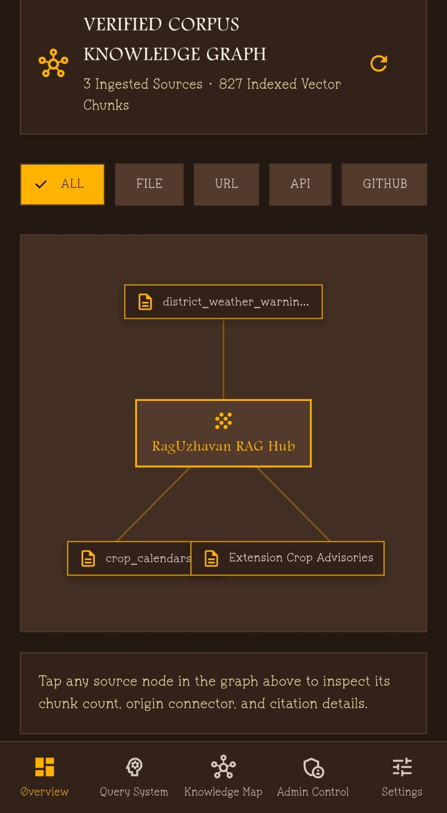
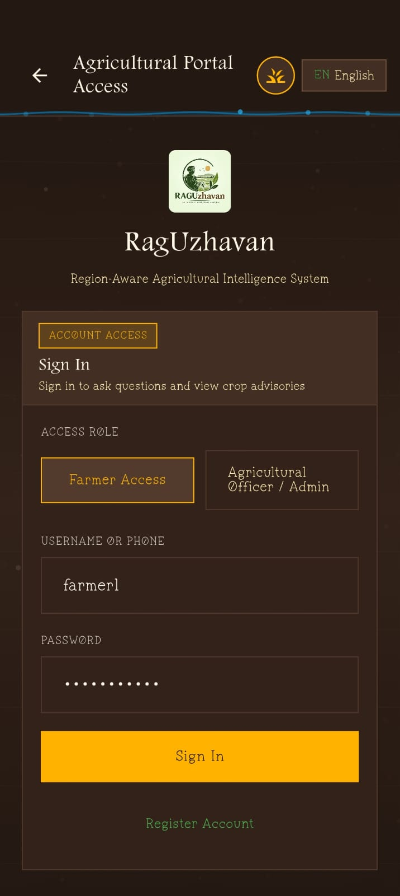
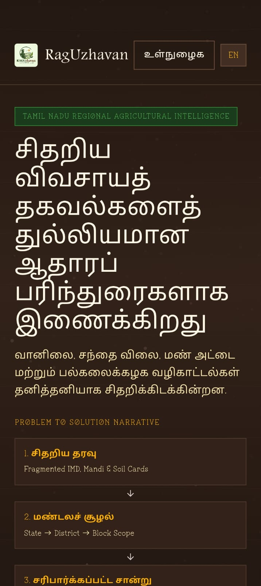
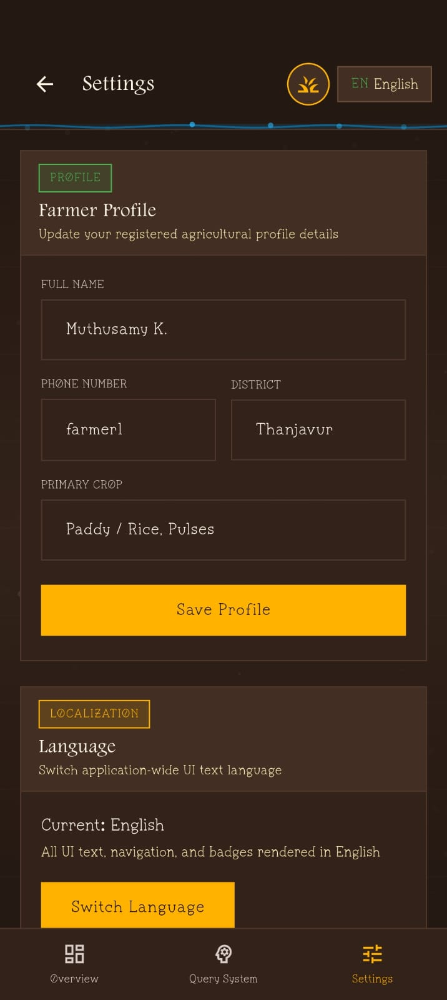

RagUzhavan solves the critical problem of agricultural data fragmentation across India. By extracting, organizing, and unifying knowledge across ICAR research, TNAU extension bulletins, Agmarknet mandi prices, and soil telemetry datasets, RagUzhavan delivers precise, verifiable guidance directly to farmers.

Agricultural data in India is dispersed across university research papers, government advisories, regional mandi price boards, and field telemetry. RagUzhavan consolidates these isolated silos into one unified grounded intelligence network.
Directly ingests verified research documents from the Indian Council of Agricultural Research (ICAR) and TNAU to provide research-grade pest and crop advisories.
Synthesizes daily market procurement feeds to ensure farmers receive accurate trading prices across Grade A and common crop varieties.
Evaluates humidity, water level, and temperature metrics to trigger proactive irrigation and fungicide spraying warnings.
Every tool in RagUzhavan is designed for practical field utility — from speech input in noisy fields to numeric dosage protection.
One-tap microphone recording allows farmers to speak questions naturally in Tamil or English without needing complex typing.
Instant voice reading of generated advisories ensures accessibility for all farmers directly in their native language.
On-device translation locks chemical dosages (0.6 g/L) and prices (₹2,320/q) so numbers are never altered during translation.
Agricultural officers can visualize source document nodes, examine entity connections, and audit query grounding metrics.
Admins can upload, index, or remove research PDF/bulletin sources directly into the vector database to update extension recommendations.
Queries submitted without network connectivity are stored in local Hive storage and automatically synced when cell service resumes.
RagUzhavan includes a dedicated portal for agricultural officers and system admins. Manage document verification, inspect vector graph linkages, toggle scientific guardrails, and track registered farmer activity.
Toggle deterministic rule checks and verify confidence scores before recommendations are published to farmers.
Upload new university extension bulletins or seasonal pest advisories directly to the ChromaDB vector database.

Clean high-contrast typography, large touch targets, soil-textured canvas, and intuitive mobile screens.
Quick Advisory & Dashboard

Phone & Extension Access

Numeric Dosage Safeguard

District & Crop Config
Admin Research Corpus Management
Admin Entity Connections